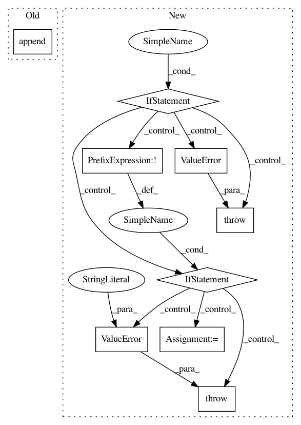

489db85647d6de8a42f9fc5162e1e9ef0831800b,gluonnlp/data/dataset.py,LanguageModelDataset,bptt_batchify,#LanguageModelDataset#Any#Any#Any#Any#,174
Before Change
"last_batch="keep"."
padding_size = batch_size - excess_size
last_batch.extend([vocab.padding_token]*padding_size)
batches.append(mx.nd.array(vocab[last_batch], ctx=ctx).reshape(batch_size, -1).T)
return SimpleDataset(batches).transform(lambda x: (x[:min(len(x)-1, seq_len), :], x[1:, :]))
After Change
- discard: The last batch is discarded if it"s smaller than `(seq_len, batch_size)`.
if last_batch not in ["keep", "discard"]:
raise ValueError(
"Got invalid last_batch: "{}". Must be "keep" or "discard".".
format(last_batch))
if last_batch == "keep":
if not vocab.padding_token:
raise ValueError("vocab.padding_token must be specified "
"in vocab when last_batch="keep".")
coded = vocab[self._data[0]]
sample_len = math.ceil(float(len(coded)) / batch_size)
padding_size = _slice_pad_length(sample_len, seq_len + 1, 1) * batch_size + \
sample_len * batch_size - len(coded)
coded.extend([vocab[vocab.padding_token]] * int(padding_size))
assert len(coded) % batch_size == 0
assert not _slice_pad_length(len(coded) / batch_size, seq_len + 1, 1)
else:
In pattern: SUPERPATTERN
Frequency: 3
Non-data size: 9
Instances
Project Name: dmlc/gluon-nlp
Commit Name: 489db85647d6de8a42f9fc5162e1e9ef0831800b
Time: 2018-08-02
Author: leonard@lausen.nl
File Name: gluonnlp/data/dataset.py
Class Name: LanguageModelDataset
Method Name: bptt_batchify
Project Name: stellargraph/stellargraph
Commit Name: ce597a0b10658043b6d6d8ffed3fff4a6ebbc1ea
Time: 2019-09-26
Author: u5824685@anu.edu.au
File Name: stellargraph/layer/appnp.py
Class Name: APPNP
Method Name: __init__
Project Name: theislab/scanpy
Commit Name: 81dbae9b7c584c4b7a384dec47a3375febdd1ef3
Time: 2021-02-01
Author: fidel.ramirez@gmail.com
File Name: scanpy/get.py
Class Name:
Method Name: obs_df